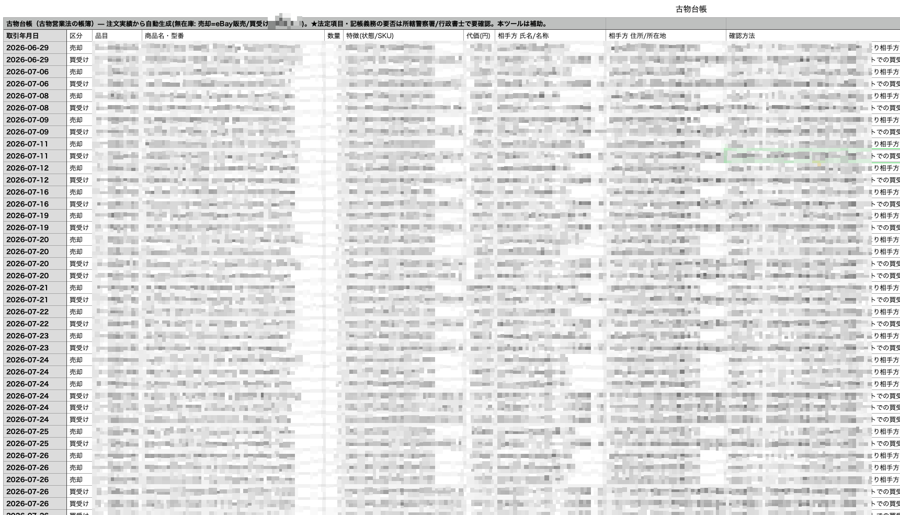

eBayで中古品を売っているあなたに、ひとつ質問です。
古物台帳、ちゃんとつけていますか?
「えっ、何それ」と思った人。
けっこう危ない状態かもしれません。
ぼくの店は、AI社員が全部自動でつけています。
今日はその話をします。
そもそも、古物商許可は持っていますか
日本で中古品を「商売として」仕入れて売るには、古物商許可が必要です(古物営業法)。
メルカリやヤフオクで買って、eBayで売る。
このモデルは、まさにこれに当たります。
「バレなければ…」は、なしです。
無許可営業には罰則があります。
取得はそんなに大変ではありません。
- 申請先: 主たる営業所を管轄する警察署(防犯係)
- 費用: 申請手数料19,000円
- 期間: 申請から40日くらい
長くお店を続けるなら、免許を取って堂々とやりましょう。
古物台帳に書くこと

そして古物商には、取引の記録義務があります。
これが「古物台帳」です。
書くのは、ざっくり言うと「いつ・何を・いくらで・誰から買い、誰に売ったか」。
ぼくの店の台帳は、こういう列で作ってあります。
- 取引年月日
- 区分(買受け/売却)
- 品目・商品名・型番
- 数量
- 特徴(状態・SKU)
- 代価
- 相手方の氏名/名称・住所
- 確認方法
- 参照(注文IDなど)
正直、これを1品ずつ手でつけるのは、地獄です。
売れれば売れるほど、事務が増えていく。
だから後回しになって、気づいたら数ヶ月分たまっている——よく聞く話です。
ぼくの店は、AIが自動でつけています
ぼくの店では、経理担当(AI)がやっています。
注文が成立した瞬間に、その1品の「買受け(仕入)」と「売却(eBay販売)」の2行が、台帳に自動で記帳されます。
ぼくがやることは、ありません。
無在庫なので「売れてから仕入れた分だけ」を買受けとして記帳する。
ここを間違えると、仕入れていない出品まで台帳に載ってしまうので、実は無在庫ならではの注意点です。
深夜にアメリカで売れても、朝には台帳が2行増えている。
記帳漏れの心配から解放されるのは、想像以上に大きいです。
フリマ仕入れの悩みどころ: 相手の情報が取れない
ここからが、この記事の本題です。
古物営業法は、買い受けのときに相手方の確認(住所・氏名など)を求めています。
でも、フリマサイトは匿名配送が主流。
相手の住所も本名も、そもそも取れないことが多いんです。
整理すると、こうなります。
- 対価1万円未満の取引は、原則として確認・記帳の義務がありません(ただしゲームソフト・CD/DVD・書籍などは1万円未満でも対象)
- 匿名配送で法定の確認方法をそのまま実行するのが難しいのは、業界全体で公式に指摘されている論点です。きれいな正解を、ぼくが断定することはできません
だからぼくの運用は、シンプルです。
記録できる情報(サイト名・取引ID・出品者名・取引画面)は、全部残す。
そして、細かい運用は管轄の警察署(防犯係)に確認する。
管轄によって案内が違うことがあるので、「うちの管轄はこう」を確かめておくのが一番確実です。
もうひとつの確認: インボイスの話
古物台帳とは別の軸で、もうひとつ確認していることがあります。
消費税の還付まわりです。
eBay輸出は消費税が免税なので、課税事業者なら仕入にかかった消費税が戻ってくる仕組みがあります。
このとき、仕入れの相手が「適格請求書(インボイス)発行事業者かどうか」で扱いが変わってきます。
フリマサイトだと、そこも画面からは分かりません。
なのでぼくは、必要事項が取れない場合、取引メッセージでこう聞いています。
「インボイスの登録番号は、お持ちでしょうか?」
この運用は、以前入っていたコミュニティで教わったものです(講師のかたが税理士さんに確認したうえで案内していました)。
ただ、このあたりは見解が分かれる論点だと思っています。
制度も変わっていくので、あなたの分の最終判断は、必ずあなたの税理士さんに確認してください。
ここでは「そういう確認をしている店がある」という実例として、受け取ってもらえたら十分です。
まとめ
- 中古転売には古物商許可(19,000円・約40日)。eBay輸出も対象
- 古物台帳は「いつ・何を・いくらで・誰から・誰に」の記録義務
- ぼくの店は注文成立の瞬間に、AIが1品2行を自動記帳
- フリマの匿名配送は難しい論点。記録は全部残して、管轄警察署に確認
- インボイスの確認メッセージは「そういう運用もある」。最終判断は税理士へ
面倒に見えますが、最初に仕組みを作れば、あとは全部自動です。
売ることに集中するためにも、帳簿は先に片づけておきましょう。
台帳に書いておこう🐹
※この記事は2026年9月時点の制度・解釈をもとにした、いち事業者の実例です。法務・税務の最終判断は、警察署・税理士など専門家に確認してください。
▼もう1つの副業🏠(レンタルスペース23部屋・売上1.5億)のレンスペ実録
https://note.com/rentalspace_kiku
▼ブログ(eBay×レンスペ、全記事まとめ)
https://rental-space.net
▼この店のやり方は、ぜんぶ1冊にまとめてあります
リサーチ・出品・値付け・顧客対応まで、初月利益18万6,673円を出した実店舗の記録と手順を全部書いた教科書です。
読んだその日から、AI社員の作り方をそのまま真似できます。
古物台帳の自動記帳のさせ方も、第7章に書きました。
『AI × eBay輸出の教科書 — 梱包以外、ぜんぶAI』(9,800円)
https://brmk.io/pqk3UP
※20部売れたら、14,800円に値上げします。